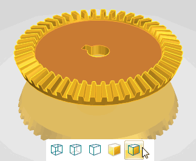
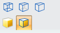
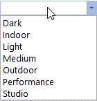

View Styles command
View Styles command
You can find View Styles in several locations:
-
Along the status bar - Displays a live gallery so you can change the view style of the model. Place the cursor over a view style and the model updates to that view style setting. Click on the view style to apply it to the model.

-
As a command in the View tab→Style group. Click on the view style to apply it the model.

Note:The gallery in the Style group is static and does not provide a live preview. You must click a view style to change the view.
-
Also located in the View tab→Style group, you can select from existing view styles from the View Styles list :

Note:The style Default has been replaced by Light.